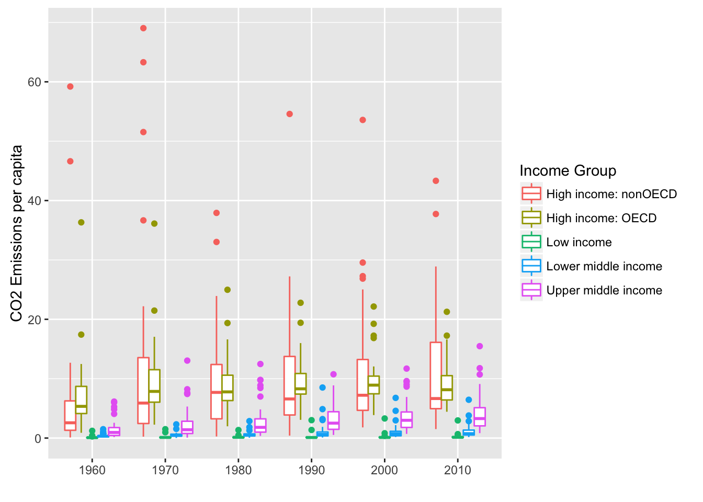

POL S/CS&SS 501, University of Washington, Winter 2016
$$ \DeclareMathOperator{\mean}{mean} \DeclareMathOperator{\var}{var} \DeclareMathOperator{\E}{E} \DeclareMathOperator{\MSE}{MSE} \DeclareMathOperator{\Bias}{Bias} \DeclareMathOperator{\SE}{se} \DeclareMathOperator{\SD}{sd} \DeclareMathOperator{\argmin}{argmin} \DeclareMathOperator{\argmax}{argmax} $$Application: Downloading and Cleaning WDI data
Jeffrey Arnold
January 24, 2016
This lesson is a practical example of using R to clean and tidy the World Bank World Development Indicators data which is
The primary World Bank collection of development indicators, compiled from officially-recognized international sources. It presents the most current and accurate global development data available, and includes national, regional and global estimates.1
library("dplyr")
library("tidyr")
library("ggplot2")
library("stringr")We first need to download the WDI data. This could be done manually by downloading the file and unzipping it, but these steps can also be automated with R functions. Download the zip file,
download.file("http://databank.worldbank.org/data/download/WDI_csv.zip",
"data/WDI_csv.zip")This may take a few minutes since it is in the tens of megabytes. Unzip it to data/WDI using the function unzip(),
unzip("data/WDI_csv.zip", exdir = "data/WDI")Let’s see what files were included in the zip file
dir("data/WDI")## [1] "WDI_Country.csv" "WDI_CS_Notes.csv" "WDI_Data.csv"
## [4] "WDI_Description.csv" "WDI_Footnotes.csv" "WDI_Series.csv"
## [7] "WDI_ST_Notes.csv"The dir function lists the files in a directory.
The files of interest for this analysis are WDI_Country, and WDI_Data, which has the series.
wdi_country <- read.csv("data/WDI/WDI_Country.csv", stringsAsFactors = FALSE,
fileEncoding = "cp1252") %>%
tbl_df()
wdi_data <- read.csv("data/WDI/WDI_Data.csv", stringsAsFactors = FALSE,
fileEncoding = "cp1252") %>%
tbl_df()
wdi_series <- read.csv("data/WDI/WDI_Series.csv", stringsAsFactors = FALSE,
fileEncoding = "cp1252") %>%
tbl_df()The dataset WDI_Country contains country-level data, including names of the country, its income group, region, lending category, and many other technocratic details. Encoding is the specific method which characters are stored; the option fileEncoding is needed to prevent an error message.
glimpse(wdi_country)## Observations: 247
## Variables: 31
## $ Country.Code (chr) "AFG", "ALB"...
## $ Short.Name (chr) "Afghanistan...
## $ Table.Name (chr) "Afghanistan...
## $ Long.Name (chr) "Islamic Sta...
## $ X2.alpha.code (chr) "AF", "AL", ...
## $ Currency.Unit (chr) "Afghan afgh...
## $ Special.Notes (chr) "Fiscal year...
## $ Region (chr) "South Asia"...
## $ Income.Group (chr) "Low income"...
## $ WB.2.code (chr) "AF", "AL", ...
## $ National.accounts.base.year (chr) "2002/03", "...
## $ National.accounts.reference.year (chr) "", "1996", ...
## $ SNA.price.valuation (chr) "Value added...
## $ Lending.category (chr) "IDA", "IBRD...
## $ Other.groups (chr) "HIPC", "", ...
## $ System.of.National.Accounts (chr) "Country use...
## $ Alternative.conversion.factor (chr) "", "", "", ...
## $ PPP.survey.year (chr) "", "Rolling...
## $ Balance.of.Payments.Manual.in.use (chr) "", "IMF Bal...
## $ External.debt.Reporting.status (chr) "Actual", "A...
## $ System.of.trade (chr) "General tra...
## $ Government.Accounting.concept (chr) "Consolidate...
## $ IMF.data.dissemination.standard (chr) "General Dat...
## $ Latest.population.census (chr) "1979", "201...
## $ Latest.household.survey (chr) "Multiple In...
## $ Source.of.most.recent.Income.and.expenditure.data (chr) "Integrated ...
## $ Vital.registration.complete (chr) "", "Yes", "...
## $ Latest.agricultural.census (chr) "2013/14", "...
## $ Latest.industrial.data (int) NA, 2011, 20...
## $ Latest.trade.data (int) 2013, 2013, ...
## $ Latest.water.withdrawal.data (int) 2000, 2006, ...The dataset WDI_Data contains the WDI data,
glimpse(wdi_data)## Observations: 333,560
## Variables: 60
## $ Country.Name (chr) "Arab World", "Arab World", "Arab World", "Arab...
## $ Country.Code (chr) "ARB", "ARB", "ARB", "ARB", "ARB", "ARB", "ARB"...
## $ Indicator.Name (chr) "2005 PPP conversion factor, GDP (LCU per inter...
## $ Indicator.Code (chr) "PA.NUS.PPP.05", "PA.NUS.PRVT.PP.05", "EG.ELC.A...
## $ X1960 (dbl) NA, NA, NA, NA, NA, NA, NA, NA, NA, NA, NA, NA,...
## $ X1961 (dbl) NA, NA, NA, NA, NA, NA, NA, NA, NA, NA, NA, NA,...
## $ X1962 (dbl) NA, NA, NA, NA, NA, NA, NA, NA, NA, NA, NA, NA,...
## $ X1963 (dbl) NA, NA, NA, NA, NA, NA, NA, NA, NA, NA, NA, NA,...
## $ X1964 (dbl) NA, NA, NA, NA, NA, NA, NA, NA, NA, NA, NA, NA,...
## $ X1965 (dbl) NA, NA, NA, NA, NA, NA, NA, NA, NA, NA, NA, NA,...
## $ X1966 (dbl) NA, NA, NA, NA, NA, NA, NA, NA, NA, NA, NA, NA,...
## $ X1967 (dbl) NA, NA, NA, NA, NA, NA, NA, NA, NA, NA, NA, NA,...
## $ X1968 (dbl) NA, NA, NA, NA, NA, NA, NA, NA, NA, NA, NA, NA,...
## $ X1969 (dbl) NA, NA, NA, NA, NA, NA, NA, NA, NA, NA, NA, NA,...
## $ X1970 (dbl) NA, NA, NA, NA, NA, NA, NA, NA, NA, NA, NA, NA,...
## $ X1971 (dbl) NA, NA, NA, NA, NA, NA, NA, NA, NA, NA, NA, NA,...
## $ X1972 (dbl) NA, NA, NA, NA, NA, NA, NA, NA, NA, NA, NA, NA,...
## $ X1973 (dbl) NA, NA, NA, NA, NA, NA, NA, NA, NA, NA, NA, NA,...
## $ X1974 (dbl) NA, NA, NA, NA, NA, NA, NA, NA, NA, NA, NA, NA,...
## $ X1975 (dbl) NA, NA, NA, NA, NA, NA, NA, NA, NA, NA, NA, NA,...
## $ X1976 (dbl) NA, NA, NA, NA, NA, NA, NA, NA, NA, NA, NA, NA,...
## $ X1977 (dbl) NA, NA, NA, NA, NA, NA, NA, NA, NA, NA, NA, NA,...
## $ X1978 (dbl) NA, NA, NA, NA, NA, NA, NA, NA, NA, NA, NA, NA,...
## $ X1979 (dbl) NA, NA, NA, NA, NA, NA, NA, NA, NA, NA, NA, NA,...
## $ X1980 (dbl) NA, NA, NA, NA, NA, NA, NA, NA, NA, NA, NA, NA,...
## $ X1981 (dbl) NA, NA, NA, NA, NA, NA, NA, NA, NA, NA, NA, NA,...
## $ X1982 (dbl) NA, NA, NA, NA, NA, NA, NA, NA, NA, NA, NA, NA,...
## $ X1983 (dbl) NA, NA, NA, NA, NA, NA, NA, NA, NA, NA, NA, NA,...
## $ X1984 (dbl) NA, NA, NA, NA, NA, NA, NA, NA, NA, NA, NA, NA,...
## $ X1985 (dbl) NA, NA, NA, NA, NA, NA, NA, NA, NA, NA, NA, NA,...
## $ X1986 (dbl) NA, NA, NA, NA, NA, NA, NA, NA, NA, NA, NA, NA,...
## $ X1987 (dbl) NA, NA, NA, NA, NA, NA, NA, NA, NA, NA, NA, NA,...
## $ X1988 (dbl) NA, NA, NA, NA, NA, NA, NA, NA, NA, NA, NA, NA,...
## $ X1989 (dbl) NA, NA, NA, NA, NA, NA, NA, NA, NA, NA, NA, NA,...
## $ X1990 (dbl) NA, NA, 7.544751e+01, 5.868064e+01, 9.184235e+0...
## $ X1991 (dbl) NA, NA, NA, NA, NA, NA, NA, NA, NA, NA, NA, NA,...
## $ X1992 (dbl) NA, NA, NA, NA, NA, NA, NA, NA, NA, NA, NA, NA,...
## $ X1993 (dbl) NA, NA, NA, NA, NA, NA, NA, NA, NA, NA, NA, NA,...
## $ X1994 (dbl) NA, NA, NA, NA, NA, NA, NA, NA, NA, NA, NA, NA,...
## $ X1995 (dbl) NA, NA, NA, NA, NA, NA, NA, NA, NA, NA, NA, NA,...
## $ X1996 (dbl) NA, NA, NA, NA, NA, NA, NA, NA, NA, NA, NA, NA,...
## $ X1997 (dbl) NA, NA, NA, NA, NA, NA, NA, NA, NA, NA, NA, NA,...
## $ X1998 (dbl) NA, NA, NA, NA, NA, NA, NA, NA, NA, NA, NA, NA,...
## $ X1999 (dbl) NA, NA, NA, NA, NA, NA, NA, NA, NA, NA, NA, NA,...
## $ X2000 (dbl) NA, NA, 7.953695e+01, 6.586906e+01, 9.165462e+0...
## $ X2001 (dbl) NA, NA, NA, NA, NA, NA, NA, NA, NA, NA, NA, NA,...
## $ X2002 (dbl) NA, NA, NA, NA, NA, NA, NA, NA, NA, NA, NA, NA,...
## $ X2003 (dbl) NA, NA, NA, NA, NA, NA, NA, NA, NA, NA, NA, NA,...
## $ X2004 (dbl) NA, NA, NA, NA, NA, NA, NA, NA, NA, NA, NA, NA,...
## $ X2005 (dbl) NA, NA, NA, NA, NA, NA, NA, NA, NA, NA, NA, NA,...
## $ X2006 (dbl) NA, NA, NA, NA, NA, NA, NA, NA, NA, NA, NA, NA,...
## $ X2007 (dbl) NA, NA, NA, NA, NA, NA, NA, NA, NA, NA, NA, NA,...
## $ X2008 (dbl) NA, NA, NA, NA, NA, NA, NA, NA, NA, NA, NA, NA,...
## $ X2009 (dbl) NA, NA, NA, NA, NA, NA, NA, NA, NA, NA, NA, NA,...
## $ X2010 (dbl) NA, NA, 8.434222e+01, 7.196990e+01, 9.382846e+0...
## $ X2011 (dbl) NA, NA, NA, NA, NA, NA, NA, NA, NA, NA, NA, NA,...
## $ X2012 (dbl) NA, NA, 8.627075e+01, 7.390983e+01, 9.515141e+0...
## $ X2013 (dbl) NA, NA, NA, NA, NA, NA, NA, NA, NA, NA, NA, NA,...
## $ X2014 (dbl) NA, NA, NA, NA, NA, NA, NA, NA, NA, NA, NA, NA,...
## $ X2015 (dbl) NA, NA, NA, NA, NA, NA, NA, NA, NA, NA, NA, NA,...However, it is an inconvenient and hardly tidy format with each column a year, and each row a country-variable. In the csv file, the columns are named “1960”, “1961”, …, but in the data frame they are named “X1960”, “X1961”, …. This is because “1960” is an invalid name for an R variable, so R creates a valid name by prefixing it with an “X”.
In order to get this data in a form usable for analysis, the first step is to reshape WDI_data so each row is a (country, year). We can do that with the tidyr function gather. We use the matches function to only match the variables beginning with “X”, which are the year variables.2
wdi_data_long <-
wdi_data %>%
select(-Indicator.Name) %>%
gather(year, value, matches("^X"))
glimpse(wdi_data_long)## Observations: 18,679,360
## Variables: 5
## $ Country.Name (chr) "Arab World", "Arab World", "Arab World", "Arab...
## $ Country.Code (chr) "ARB", "ARB", "ARB", "ARB", "ARB", "ARB", "ARB"...
## $ Indicator.Code (chr) "PA.NUS.PPP.05", "PA.NUS.PRVT.PP.05", "EG.ELC.A...
## $ year (chr) "X1960", "X1960", "X1960", "X1960", "X1960", "X...
## $ value (dbl) NA, NA, NA, NA, NA, NA, NA, NA, NA, NA, NA, NA,...However, the variable year still has an “X” prefix. We will remove the “X” using the function str_replace from the stringr package, and convert it to an integer vector.3
wdi_data_long <- mutate(wdi_data_long,
year = as.integer(str_replace(year, "X", "")))Now reshape the dataset so each variable is a column,
wdi_data_long <- wdi_data_long %>%
spread(Indicator.Code, value)
dim(wdi_data_long)## [1] 13888 1348Now each row of the dataset is a (country, year) observation and each column is a variable.
Let’s merge the data with the country data to add their regions and income levels. The variable Country.Code in both data frames are their keys.
wdi_data_long <-
wdi_data_long %>%
left_join(select(wdi_country, Country.Code, Region, Income.Group),
by = "Country.Code")The WDI data include “country” observations that are actually aggregations of countries, for example, “OECD members”, “High income”, “Sub-Saharan Africa (all income levels)”. These observations have empty values for Region, and we can filter them out using that.
wdi_data_long <- wdi_data_long %>%
filter(Region != "")Let’s use this data to make a plot. For example, the average CO2 emissions per capita by decade by income group,
ggplot(select(wdi_data_long, Income.Group, year,
Country.Code, EN.ATM.CO2E.PC) %>%
filter(!is.na(EN.ATM.CO2E.PC)) %>%
mutate(decade = year %/% 10 * 10) %>%
group_by(decade, Country.Code) %>%
summarise(EN.ATM.CO2E.PC = mean(EN.ATM.CO2E.PC),
Income.Group = first(Income.Group)),
aes(x = factor(decade),
y = EN.ATM.CO2E.PC,
color = Income.Group)) +
geom_boxplot() +
scale_colour_discrete("Income Group") +
ylab("CO2 Emissions per capita") +
xlab("")
http://data.worldbank.org/data-catalog/world-development-indicators↩
The leading “^” means to match the start of the string. This is an example of a regular expression, which is a powerful method for pattern matching. See R for Data Science for more.↩
The stringr package contains many functions for processing strings. See the introduction or the R for Data Science chapter on Strings for more information on it.↩

This work is licensed under a Creative Commons Attribution-NonCommercial-ShareAlike 4.0 International License. R code is licensed under a BSD 2-clause license.